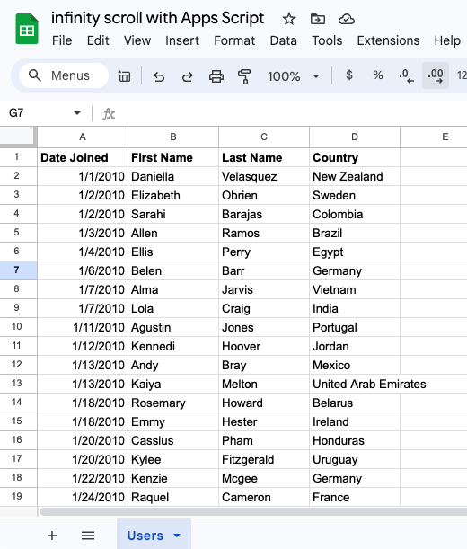
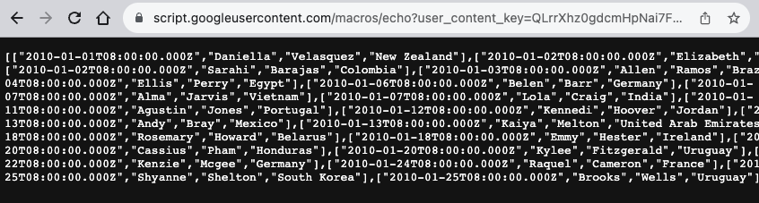
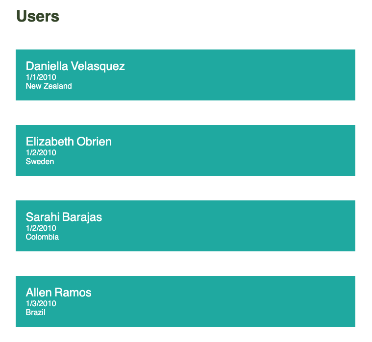

In this post, we will create a small Google Apps Script web app that receives data requests. The app will fetch rows from a Google Sheet. A client side web page will execute calls to the apps script for new data as the user scrolls down the page.
For the purpose of this tutorial, I created a simple Google Sheet with thousands of rows of fake data. The rows are sorted by column A, "Date Joined".
The web app
The first thing we need to do is create a simple function in Google Apps Script that will receive two arguments: the page number and the page size. These arguments will inform the function from which row to start pulling data, and how many rows of data to pull:
function getData(page, pageSize = 20) {
const spreadsheet = SpreadsheetApp.getActive();
const sheet = spreadsheet.getSheetByName('Users');
// TODO: Add data validations as needed...
const data = sheet.getRange(page * pageSize + 2, 1, pageSize, 4).getValues();
return data;
}In the code above we access our users sheet and pull out the number of rows as defined by pageSize, starting from position page * pageSize + 2.
We can write a simple test function:
function test() {
console.log(getData(1, 10));
}Above we call the function, passing into it page 1 and page size of 10. Since paging starts at zero, we will log rows 12 through 21.
Now we need to write a simple doGet function that once we deploy the script as a web app will respond to GET requests:
function doGet(e) {
const page = e?.parameter?.page || 0;
const pageSize = e?.parameter?.pageSize || 20;
const data = getData(page, pageSize);
return ContentService.createTextOutput(JSON.stringify(data)).setMimeType(
ContentService.MimeType.JSON
);
}Above, we pull out the page and pageSize query parameters that we will pass from the browser when calling the web app. We use optional chaining to check that the parameters exist; otherwise, we use default values. We then call our getData function with these arguments. Finally, we use ContentService to push the data rows back to the browser.
Deploy the script as a web app. Under Execute as, select "Me", and under Who has access, select "Anyone". Copy the web app URL and paste it in a browser window. The browser will display the first 20 rows of data. You can now add "?page=1&pageSize=20" to the end of the web app URL to get the next set of rows in your browser.
That's all we need for our web app. Now we can work on our client-side web page.
Web page
Let's create a simple HTML page to contain our user list:
<!DOCTYPE html>
<html lang="en">
<head>
<meta charset="UTF-8" />
<meta name="viewport" content="width=device-width, initial-scale=1.0" />
<title>Users</title>
<style>
html,
body {
font-family: sans-serif;
color: white;
}
h1 {
color: #3c5030;
}
.container {
width: 90%;
margin: auto;
}
.name {
display: flex;
}
.firstName,
.lastName {
font-size: 150%;
}
.firstName {
margin-right: 5px;
}
.user-div {
margin: 50px 0;
padding: 20px;
background-color: lightseagreen;
}
</style>
</head>
<body>
<div class="container">
<h1>Users</h1>
<div id="users"></div>
</div>
<template id="template-user">
<div class="user-div">
<div class="name">
<div class="firstName"></div>
<div class="lastName"></div>
</div>
<div class="dateJoined"></div>
<div class="country"></div>
</div>
</template>
</body>
</html>
Currently, the page doesn't contain any user info. It has only a header, a template that we will use to programmatically populate the user information, and basic CSS.
Inside the HTML, right before the closing </body> tag, add a <script></script> tag.
Let's write a function that will receive a single user information and populate it to the page using the template. We'll then invoke the function statically:
function appendUser(firstName, lastName, dateJoined, country) {
const template = document.querySelector('#template-user');
const clone = template.content.cloneNode(true);
clone.querySelector('.firstName').innerText = firstName;
clone.querySelector('.lastName').innerText = lastName;
clone.querySelector('.dateJoined').innerText = dateJoined;
clone.querySelector('.country').innerText = country;
document.querySelector('#users').appendChild(clone);
}
appendUser('John', 'Smith', '10/10/2013', 'United States');Above we clone the template, populate its divs with the function parameters, and append the clone to the DOM. The page looks like this:

Now we can call the server requesting the initial batch of data. Remove the standalone invocation of appendUser, and replace it with the following:
let page = 0;
const pageSize = 20;
let dataRequested = false;
async function fetchServerData() {
dataRequested = true;
const webappUrl = `url-of-your-webapp`;
const headers = new Headers();
headers.append('Content-Type', 'text/plain;charset=utf-8');
const req = new Request(
`${webappUrl}?page=${page}&pageSize=${pageSize}`,
{
redirect: 'follow',
headers,
}
);
const res = await fetch(req);
const jsn = await res.json();
if (jsn.length > 0) {
jsn.forEach((row) => appendUser(...row));
page++;
}
dataRequested = false;
}
fetchServerData();Above, we do several things. First, we declare global variables for page and page size. We also define a dataRequested variable which we will use to prevent the user from sending multiple data requests to the server in one time. Next, we create a function to call our web app. You'll need to enter the URL to your own web app. We then execute the request, update the page with the data, and increment our page number for future calls. Lastly we invoke the function to populate the page, which now has the actual data from our sheet:
Infinity scroll
The last step of our tutorial is to create a function that will fire when the user scrolls the pages:
function handleScroll() {
if (dataRequested) {
return;
}
const atBottom =
window.innerHeight + window.pageYOffset >= document.body.offsetHeight;
if (!atBottom) {
return;
}
fetchServerData();
}
document.addEventListener('scroll', handleScroll);In the simple event handler function above we check if a data request is already in progress, and if so then we exit so as not to make redundant requests. Next, we check if the user has scrolled all the way to the bottom of the page. If they haven't then again we exit. Finally we make the data request. The last line adds the function as a handler for the scroll event.
That's all there is to it. Now if you scroll to the bottom of the page, additional users will be appended and the scroll bar will jump up.